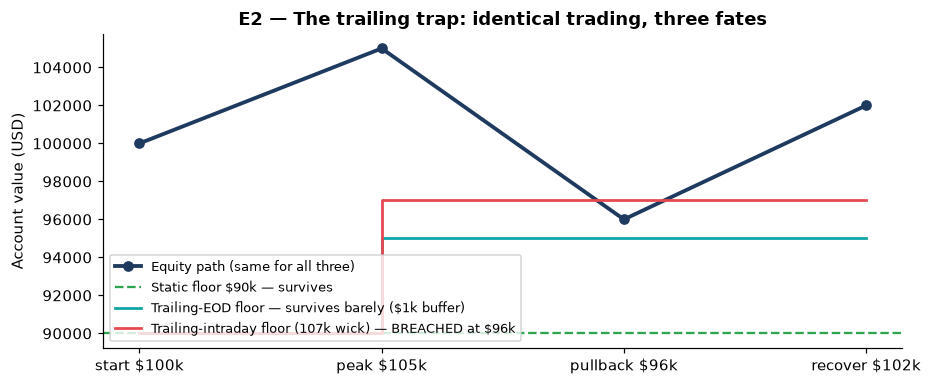
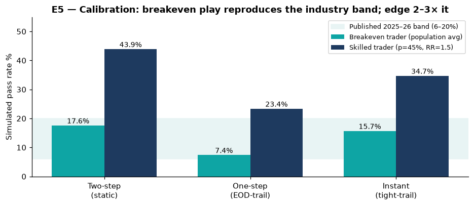
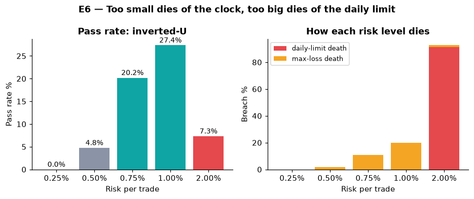
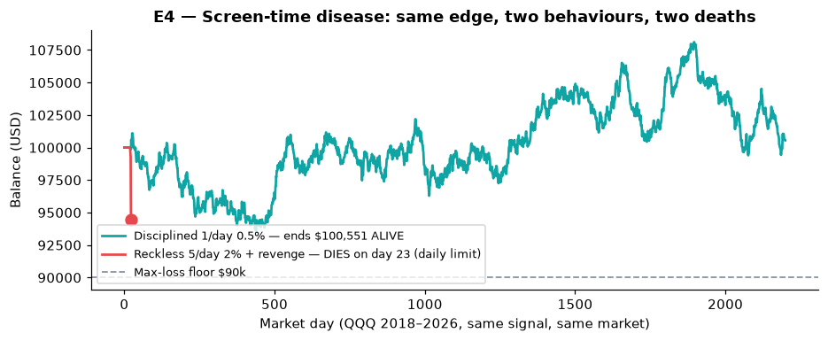

make e1 and make e7. You will understand funded accounts better than most paid-course graduates — in one evening, for free.A $100,000 funded account with a 10% loss limit is a $10,000 risk account wearing a $100,000 costume. This project proves it — with 9 runnable experiments on real market data — and teaches you funded accounts from zero to professional.
pip install -r requirements.txt
make test && make all
open preview.html # this page — the visual tour
Identical signal, identical QQQ data 2018–2026. Green trades once a day risking 0.5%. Red stares at the screen 12 hours, trades 5× a day risking 2% and doubles down after losses. Red dies on day 23. Green is still alive after 2,200 days.
Seven ideas. Each one saves beginners months of losses. Each one is proven by an experiment below.
Every number below regenerates from public market data via make e1 … e9. Full tables live in results/*.json.

| Account | Real risk money | Illusion | Fee / risk | Target / risk |
|---|---|---|---|---|
| Two-step $100k / 10% | $10,000 | ×10 | 5.0% | 80% |
| Two-step $25k / 10% | $2,500 | ×10 | 6.0% | 80% |
| One-step $100k / 6% | $6,000 | ×16.7 | 10.0% | 166.7% |
| Instant $100k / 5% | $5,000 | ×20 | 18.0% | — (tighter leash instead) |

| Trader | Two-step | One-step | Instant |
|---|---|---|---|
| Breakeven (population average) | 17.6% | 7.4% | 15.7% |
| Skilled (45% win, 1.5 reward) | 43.9% | 23.4% | 34.7% |

| Risk/trade | 0.25% | 0.50% | 0.75% | 1.00% | 2.00% |
|---|---|---|---|---|---|
| Pass rate | 0.0% | 4.8% | 20.2% | 27.4% | 7.3% |
| Daily-limit deaths | 0% | 0% | 0% | 0% | 91.3% |

| Path | Best-day share | 50% rule |
|---|---|---|
| Hero: +5%, +0.5%, +0.5% | 83.3% | FAIL — keep trading |
| Grind: +1% × 6 days | 16.7% | PASS |
| Market | End | Trades | Win% | Profit factor | 8% hit? |
|---|---|---|---|---|---|
| SPY | $89,966 | 950 | 46.8% | 0.92 | No (breached) |
| QQQ | $100,551 | 1,743 | 49.3% | 1.00 | No (alive, target missed) |
| GLD | $89,545 | 424 | 45.3% | 0.81 | No (breached) |
| EURUSD | $89,994 | 773 | 16.6% | 0.11 | No (breached) |
| Policy | Breach rate |
|---|---|
| Stop at firm limit (5%) | 88.3% |
| Personal stop at 2.5% | 52.2% (−40.9%) |
| True pass rate | Expected attempts | Expected fees | P(need 40+) |
|---|---|---|---|
| 6% | 16.7 | $8,333 | 8.42% |
| 10% | 10.0 | $5,000 | 1.48% |
| 14% | 7.1 | $3,571 | 0.24% |
| 16.8% | 6.0 | $2,976 | 0.06% |
make e1 and make e7. You will understand funded accounts better than most paid-course graduates — in one evening, for free.make e4 and make e6 to see which rule killed you (daily guillotine vs slow bleed) and what size would have survived. Diagnose before you rebuy.src/strategies.py, keep the rule wrapper, run make e8. If it can't pass the simulator, it won't pass the firm — fix it here for $0.PAPER_OUTLINE.md with pre-registration fields and a 5-chapter roadmap.make media). Use them in lessons — the numbers are checkable, the control group is published.| Feature | What you get |
|---|---|
| 📏 Rule engine | Static, trailing end-of-day & intraday floors, daily-loss with server-day reset, best-day consistency, min-days — one class, unit-tested |
| 📡 Live data | Yahoo → Stooq → seeded-synthetic fallback, cached CSVs + SHA manifest (SPY/QQQ/GLD/EURUSD 2018–2026) |
| 🎲 Monte-Carlo lab | Pass/breach probabilities per program, risk sweep, tuition EV — seeded & reproducible |
| 🥊 Behaviour isolation | Disciplined vs reckless execution on the same signal and data |
| 📊 Media factory | make media rebuilds every figure + demo GIF/MP4 from results |
| Feature | What you get |
|---|---|
| 🐳 One-command runs | Docker Compose services for research + tests; identical environment anywhere |
| 🛡 No-lookahead proofs | Signals shifted one bar; tests verify signal[t] uses only data ≤ t−1 |
| 💸 Costs inside limits | Commissions counted before breach checks, like real firms |
| 🎓 PhD track | Paper outline (IMRaD + pre-registration), 5-chapter roadmap, reviewer checklist |
| 📜 MIT licensed | Use, modify, share — free forever |
pip install -r requirements.txtmake test && make allmake media — rebuild figures + demo
docker compose builddocker compose run --rm testdocker compose run --rm research
Single experiments: make e1 … make e9 · Results land in results/*.json · Data manifest in data/MANIFEST.txt
Prefer a two-step static-loss account with the smallest size: the floor never moves, fees are lowest per risk-dollar, and the evaluation itself trains discipline (E1, E2, E5).
Around 0.5–1% of headline (≈5–10% of your risk money), with a personal daily stop at half the firm's limit. Below that you can't reach targets; above it the daily limit executes you (E3, E6).
Almost always one of three: an intraday-trailing floor rose under you (E2), a single day broke the daily limit (E3), or one hero day violated consistency (E7). Check them in that order.
Yes — replace the signal in src/strategies.py, keep everything else, run make e8. The wrapper tells you which rule your strategy breaks first.
No. It is a measurement instrument. It shows base rates, mechanisms and tuition maths so you can decide with open eyes.